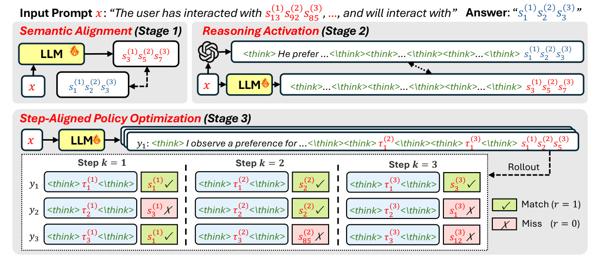
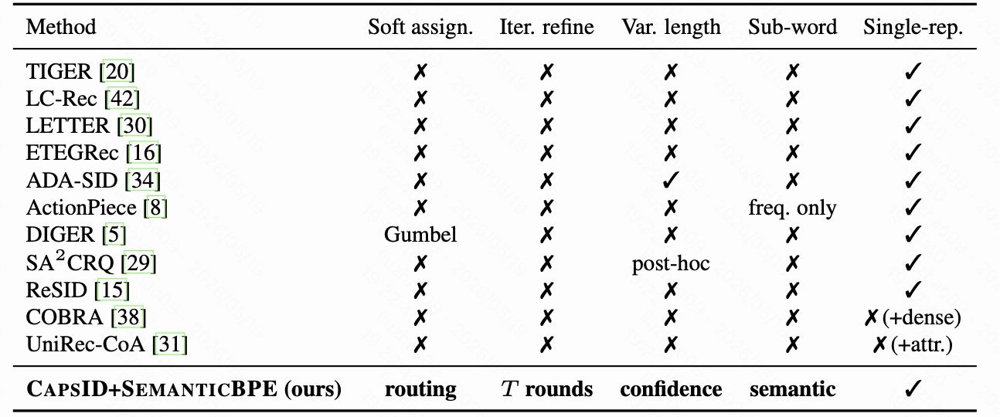
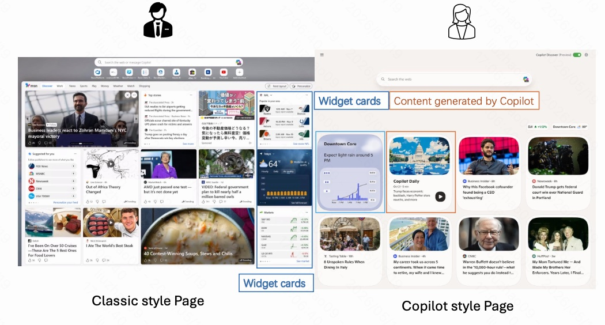

01
RAGR: Review-Augmented Generative Recommendation
问题：review 如何进入生成式推荐序列，而不抢走 item 预测目标？
生成式推荐Review SignalSemantic IDDPO
阅读笔记
Paper Library
按问题、方法和工程判断整理的精读索引。每篇笔记保留正文推演，只在这里压成一行可检索的线索。
问题：review 如何进入生成式推荐序列，而不抢走 item 预测目标？

问题：整体校准正常时，watch-time 的局部偏差怎么被发现并修正？

问题：新品的长期增长价值能否直接进入 semantic-ID 生成式召回？

问题：端侧 RAG 该存更多原文，还是存更对齐的轻量记忆？

问题：长上下文稀疏注意力能否不再固定 top-k，而是按 query 自适应？

问题：SID 的层级结构能不能变成 RL credit assignment 的层级结构？

问题：单棵 SID 解码树为什么会限制生成式推荐的表达力？

问题：语义 ID 是否应该按置信度和复杂度自适应变长？

问题：新场景冷启动如何同时处理统计特征、模型准入和线上校准？

问题：固定长度 semantic ID 为什么会放大头尾商品冲突？

问题：端侧轻量 LLM 什么时候值得被触发来更新用户意图？

问题：推荐能否从候选打分改写为语义 ID 的自回归生成？


问题：LLM embedding 如何同时吸收协同过滤信号和文本语义？